Nuke 的 Keyer 节点提供了用于拉动亮度键、绿色和蓝色屏幕以及彩色通道的标准控件。我们将使用这个键控器和其他几个节点来处理一个特殊的键控情况: 视频。
我们将首先插入一组节点，这些节点允许您通过过滤数字视频中色度红色和色度蓝色通道中的压缩伪影来拉一个清洁器哑光。这包括将图像转换回其原始颜色空间，用人工制品模糊通道，然后将图像转换回 Nuke 的本地线性色彩空间。
| 1。 | 在“ 键控视频 ”节点树，选择 Fgman.0001.dpx 节点。 |
当 Nuke 将图像读入工作区，它将它们转换为线性颜色空间。所以在这里，第一步是将视频图像转换回视频 YCbCr colorspace。
| 2. | 在节点树上单击鼠标右键，然后选择 颜色 > 色彩空间 . |
| 3. | 在 Colorspace1 控制面板，更改 出去 参数到 YCbCr . |
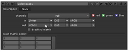
不，你没有 80 后的闪回。你所经历的是红色、绿色和蓝色通道重新映射到亮度 (Y) 、色度蓝色 (Cb) 和色度红色 (Cr) 的本地视频通道的结果, 分别。
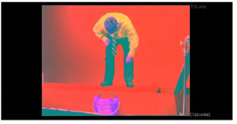
| 4. | 新闻 r 在观众面前看 Y 频道。新闻 g 查看 Cb，和 b 查看 Cr。 |
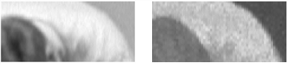
上面，你看到左边的 Y 通道图像。Cb 通道图像显示在右侧。请注意 Cb 通道中的 “块状” 压缩工件。这些使得很难为你的哑光获得干净的边缘，但是由于你的大部分细节都在 Y 通道中, 您可以对 Cb 和 Cr 通道应用一个小的模糊操作，以改善情况，而不会丢失太多细节。
| 5. | 新闻 r , g ,或 b 再次切换回所有颜色通道。 |
| 6. | 右键单击 Colorspace1 节点，然后选择 过滤器 > 模糊 。在 Blur1 控制面板中，设置模糊 尺寸 到 4 . |
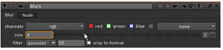
| 7. | 选择 Rgb 在 通道 下拉菜单并取消选中 红色 通道盒。您不希望模糊操作处理红色通道 (重新映射的 Y 或 luma 通道) 中的图像，因为该通道未压缩。 |
| 8。 | 右键单击 Blur1 节点并添加另一个 颜色 > 色彩空间 节点。更改 在 参数到 YCbCr 以及 出去 参数到 线性 。这将图像转换回标准 rgb/线性。 |
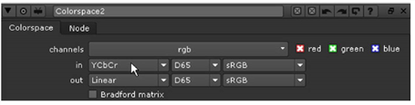
| 1。 | 选择 Colorspace2 节点，然后选择 Keyer > Keyer 从右击菜单中。 |
这将插入一个名为 “亮度键” 的键控器，这是该节点的默认键控操作。
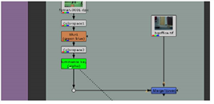
| 2. | 将查看器附加到 亮度键 节点，然后按 一个 显示 alpha 通道。 |
在 Keyer 节点的控制面板中，您将看到 “范围” 图:
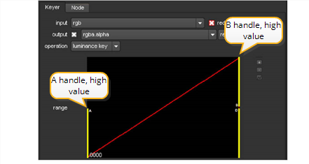
Range graph 是调整哑光的低像素值和高像素值的地方。左边的第一个黄色手柄决定键的低值或透明值，右边的第二个手柄决定你的高值或不透明值。
| 3. | 将第一个黄色手柄向右拖动，直到显示 。303 (大约)，并在观众中观看效果。 |
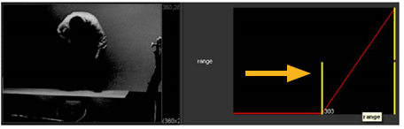
这将设置遮罩的低值。低于此值的任何像素都将被剪裁为黑色。
| 4. | 将位于右上角边缘的黄色手柄向左拖动，直到显示 。455 (大约)。 |
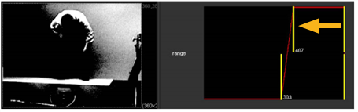
这将设置遮罩的高值。高于此设置的像素值被剪裁为白色。在这些设置下，它不太 “不值得”，所以让我们做一个调整。
| 5. | 拖动 一个 用于更改低设置的句柄 。303 到 。424 ,并拖动 B 更改高值的句柄 。455 到 .61 . |
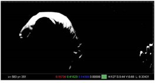
调整控制柄的位置时，线的坡度控制磨砂边的柔度或灰色级别。逐渐倾斜会产生较软的边缘。更尖锐的坡度会产生锯齿状或脆脆的边缘-拖动 一个 顶部的手柄 B 处理一下，你就会明白这意味着什么。
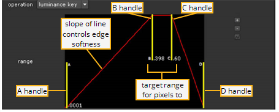
默认位置允许您控制低值和高值，假设您的图像有不同的明暗区域。然而，有时哑光的主题落入 “中灰色” 区域; C 和 D 曲线上的控制柄，在前两个控制柄之后，可以移动关键点的高值的中心。
| 6. | 更改键控 操作 到 绿屏 。将高值句柄向右拉，直到的值 1.0 。然后，将低值设置为 .90 . |
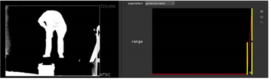
图像周围有很多垃圾，但看起来你的主题周围有一个相当干净的边缘。让我们在 comp 中检查一下。
| 7. | 切换查看器以显示所有颜色通道，然后将查看器附加到 合并 (结束) 节点。 |
那太可怕了。发生了什么？绿屏键控器创建的 alpha 通道必须与原始图像的像素值相乘才能生成遮罩。一些键控器，如 Primatte，提供了一个 “复合” 输出选项，为你处理乘法运算。Keyer 节点没有，所以你必须手动完成。
| 8。 | 选择 绿屏 键控节点并选择 合并 > Premult 从右击菜单中。 |
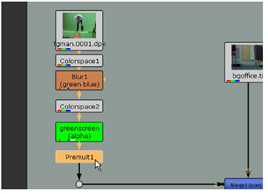
| 9. | 调整 greenscreen 节点的控制面板中的 “高” 和 “低” 范围值，以细化主题周围的边缘。 |
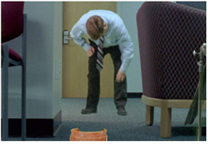
这个键控器并不特别擅长处理溢出，所以让我们添加一个颜色校正节点来移除这些绿色边缘。
| 10. | 选择 Premult1 节点，然后选择 颜色 > HueCorrect 从右击菜单中。 |
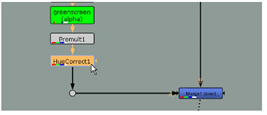
| 11。 | 选择 G_sup 中的参数 Huecorret1 控制面板选择绿色抑制曲线。 |
| 12. | 在查看器上，按 Ctrl 或 Cmd 按键并擦洗绿色边缘。 |
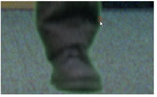
在 HueCorrect 属性面板中，您将看到一条黄色垂直线，它标记了曲线中需要降低以抑制样本像素的位置。
| 13。 | 在查看要抑制的边时，调整 G_sup 曲线，使其看起来类似: |
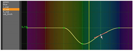
当你对溢出抑制感到满意时，你可能想添加一个快速垃圾哑光来移除索具。
| 14. | 单击节点树中的空位置，然后添加 绘制 > RotoPaint 节点。 |
| 15。 | 选择 贝塞尔 工具在浏览器左侧的 RotoPaint 工具栏中，点击 (如果你想要弯曲的点，可以拖动) 在浏览器上，在男人周围画一个 Bezier 形状。四点应该足够了。 |
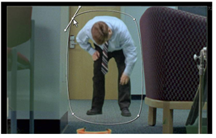
| 16。 | 选择 RotoPaint 节点并按 M 添加合并节点-这是选择的快捷方式 合并 > 合并 从菜单中-更改合并 操作 到 面具 . |
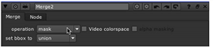
| 17. | 重新连接节点，如下所示。的 RotoPaint1 节点应连接到 “屏蔽” 节点上的 A 输入, Huecorret1 应连接到 B 输入。连接的输出 面具 到 “肘部” 点。 |
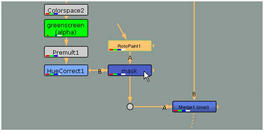
这种屏蔽方法与前面示例中的方法略有不同。这里的要点是，有不同的方法来构建这些类型的复合材料。你的结果应该类似于下面的屏幕截图。
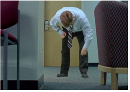
|
|